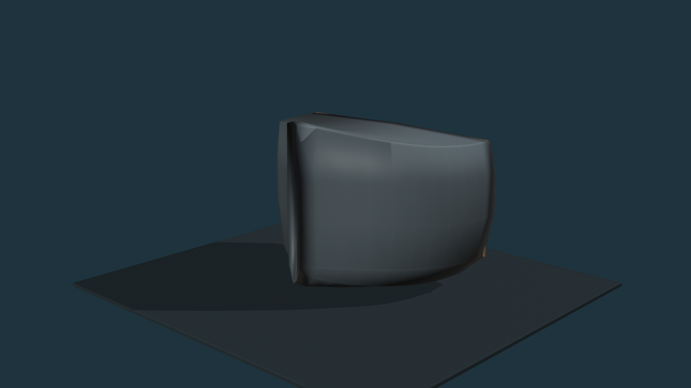
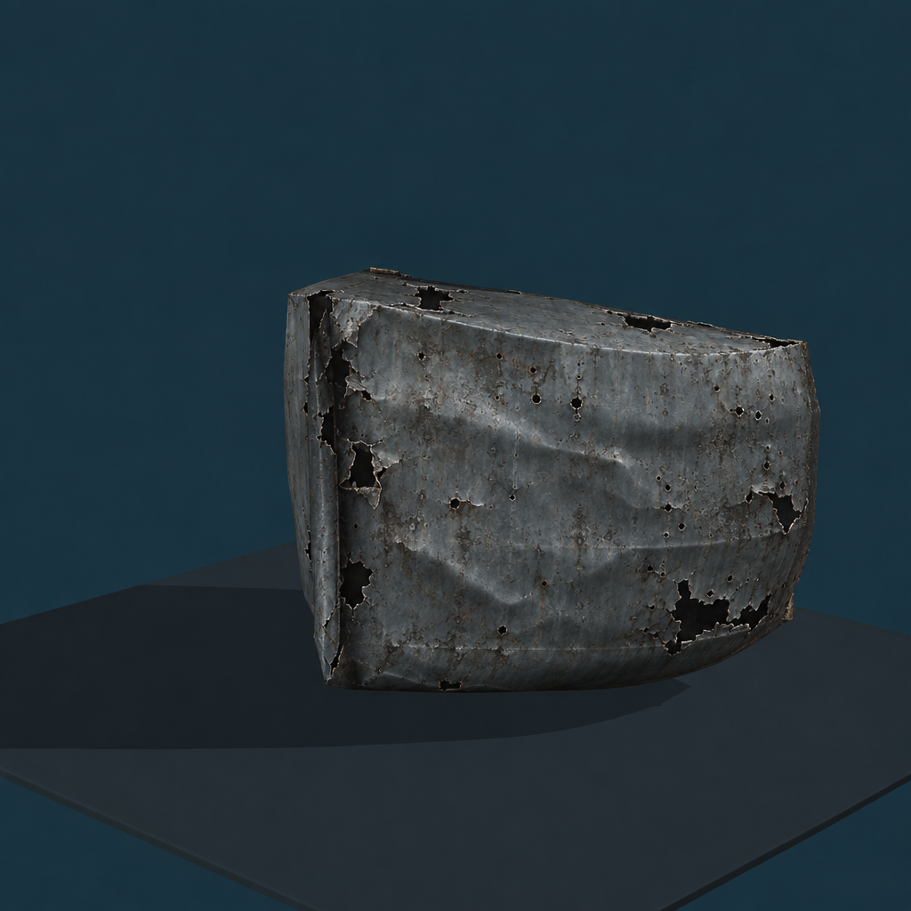
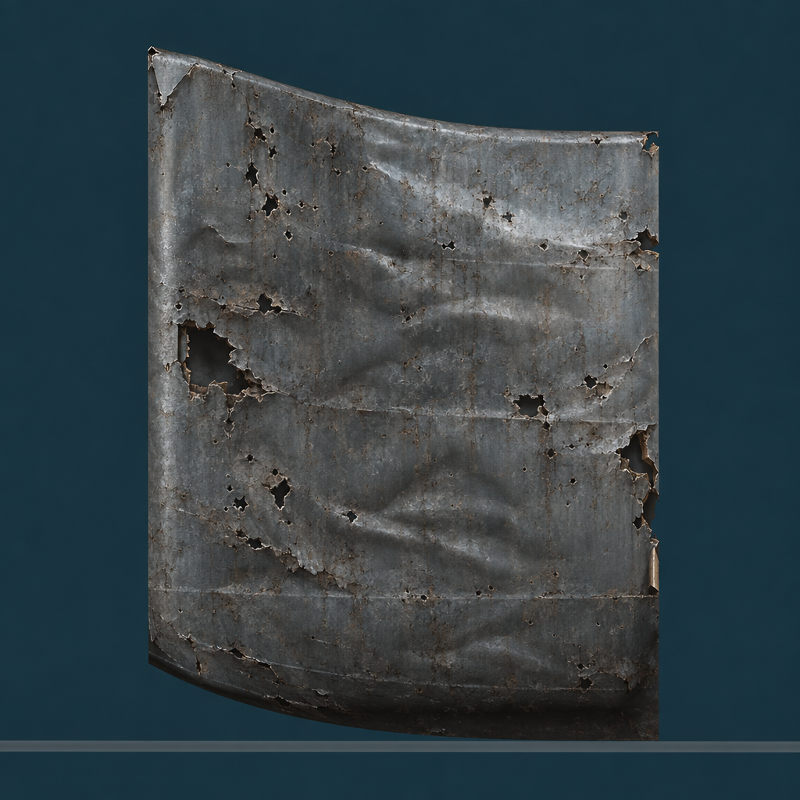
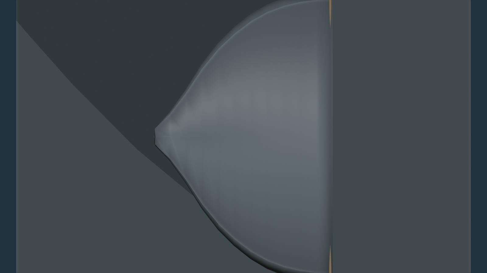
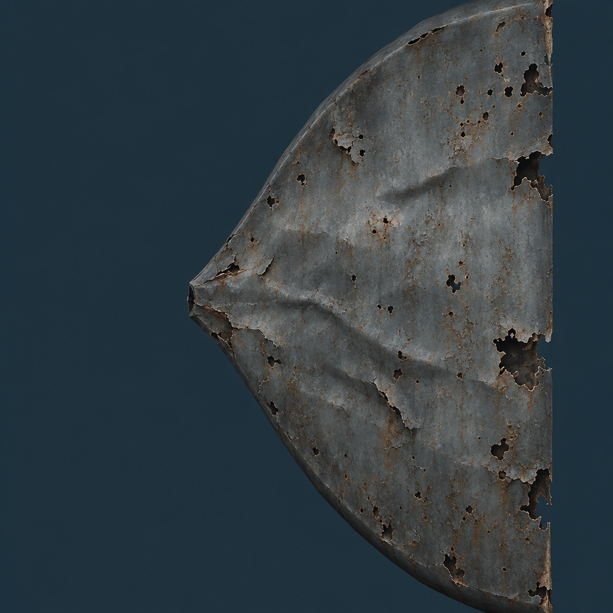
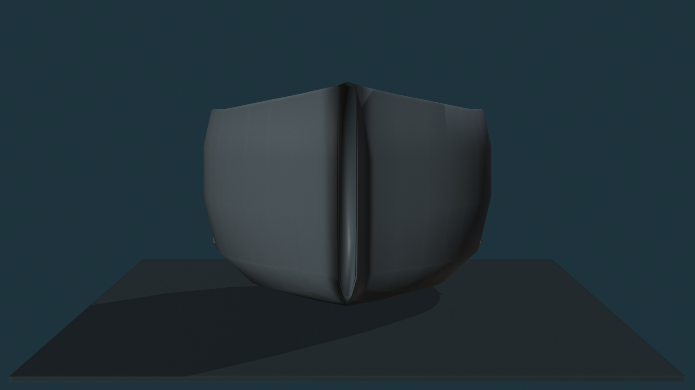
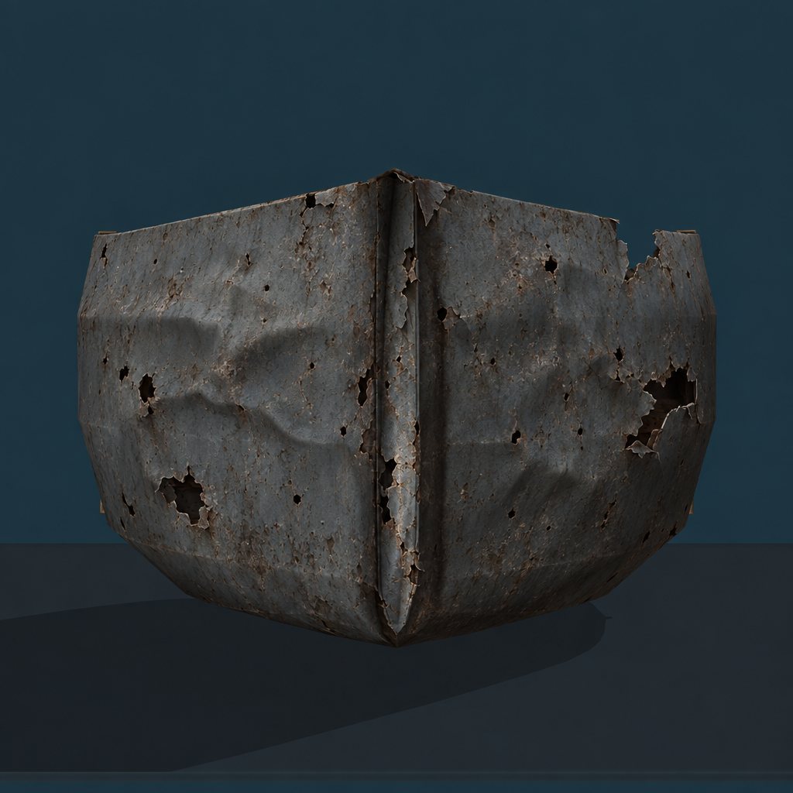

V07 was automatically HOLD/FAIL because it compressed the 11.02 m bow length to 4.71 m (57% error). V08 was regenerated from four individually damaged Gate-A views, then fit with axis rotation + translation + uniform scale only. No non-uniform stretching.
Gate-A envelope: 11.018 × 18.198 × 12.954 m
V08 cleaned shell: 10.492 × 17.856 × 13.796 m
Maximum AABB dimension error: 6.5%
Clean review mesh: 180,000 triangles
After a 180° orientation correction, V08 also preserves the longitudinal taper: bow stations are narrow and grow toward the A/B cut in the same direction as Gate A.
Assembled — Meshy Shell + PASSED Blender Structure
Use these first. The smooth Gate-A exterior shell is hidden; the V08 Meshy shell is shown over the unchanged internal Blender structure.
Meshy Shell Alone
Gate-A Shape → Damaged Reference
These are the strict individually edited views supplied to Meshy. Each edit was instructed to preserve the exact Gate-A framing/silhouette and change only the exterior steel damage language.
Perspective


Side


Top


Bow


Current Gate
PASS / FAIL / changes on the full Meshy exterior shell idea. Judge whether this gives us the dents, holes, buckling and irregular hard-edge breakup you wanted while still reading as the same PASSED Section-A bow. Gate A remains recoverable underneath; nothing has gone to Unreal.